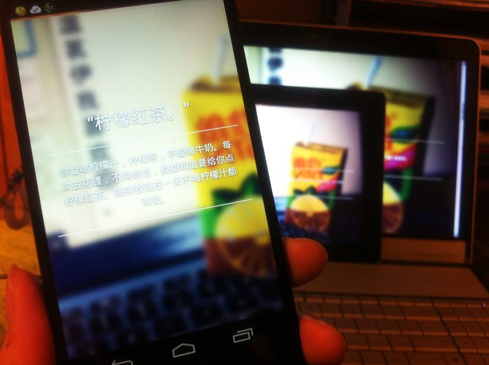
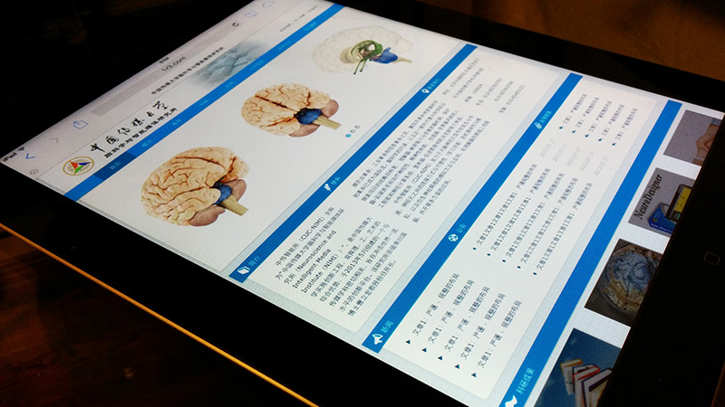
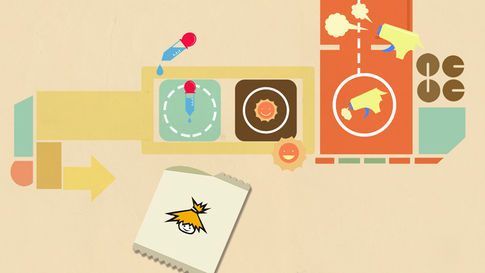

-
L.esson

- 一天完成的《多媒体交互设计二》结课作业而已。作业要求仅仅是「选中三门课才可提交」与「使用Parse作为数据后端」。但自己主要尝试了在Mobile-Web中进行Navigation Drawer实现和Material Design。另外，虽然使用了Backbone，但是代码很渣，MVC有待进一步学习。
- Responsible : Front-End , Design
- Css {Js} Link
-
2014贺卡生成器

- 作为 中国传媒大学校学生会网络推广部副部长 与 校学生会宣传部 合作完成的学生会内工作，使用了Html5 Canvas及相关的库，优先保证移动端环境（包括微信）与现代浏览器环境的可用性。
- Responsible : Front-End , Product
- Css {Js} Link
-
100 Days
- 送给GF的100天纪念日小网站。自适应百分比布局，优先保证移动端的体验与全端的兼容性。参考了"豌豆荚-轨迹"的设计。
- Responsible : All (Photography & Front-End)
- Ps Link
-
SENOVA WebApp

- 《多媒体交互设计》结课作业，以北汽“绅宝”为目标品牌，iPad为主要平台进行的App设计，旨在用一种可交互的方式介绍“绅宝”车型。完全采用Html5技术开发，可添加至主屏幕离线运行。着力于触控交互体验的优化与优雅的动画设计。
- Responsible : Front-End，Interaction，Product
- Partner : ZOE-张瑜
- Css {Js} Link
-
第十届首都高校“风采之星”才艺选拔大赛决赛投票专区

- 作为校学生会网络推广部委员完成的学生会内工作，从设计最初就考虑了响应式设计，移动优先，所有动画优先由CSS3驱动，并尝试了Metro风格的UI设计。
- Responsible : All (Design & Front-End)
- Ps Link
-
《真相不止一个》

- 第一个商业Motion Graphic，一档网络节目的片头包装。虽然最后不幸“被飞机稿”，但仍是目前为止质量最高的MG作品。
- Responsible : Motion Graphic Design
- Partner : Psycho-俞宸睿
- Ai Ae View
-
Internship in LxU Studio

- 于大一暑假在信息可视化设计工作室 LxU Studio 实习，参与了2个“百度”视频项目，1个“德国马牌轮胎”多媒体项目。
- Title : Motion动画师
- Ai Ae @LxU
-
《Puzzle Hybrid》

- 《设计基础》结课作业，谜之规律的混合了serif与sans-serif，同时添加了斑马纹装饰，故取名“谜之混搭”……动态展示视频见下方View链接。
- Ps Ae View
-
中国传媒大学脑科学与智能媒体研究所
- “中国传媒大学脑科学与智能媒体研究所”网站前端Demo实现。无论交互和视觉都力求在传统与新颖中找到平衡点。
- Responsible : Front-End，Product
- Partner : ZOE-张瑜 ， 吕丹阳
- Css {Js} Demo
-
New Media Art & Design

- 《网站基础》结课作业，为我所就读的“新媒体艺术设计系”做网站概念设计。Single-Page Minisite，结合使用了CSS3 Transition与jQuery Animate，自适应布局，尝试达到App-like级别的网站体验。
- Responsible : Front-End，Intercation，Product
- Partner : ZOE-张瑜 , 徐婷
- Css {Js} Demo
-
《豆浆新时代》
- 广告，角色动画与运动图形的结合尝试，2013年时报金犊奖“动画广告类”&“电视广告类”入围奖。
- Responsible : Motion Graphic
- Partner : Psycho-俞宸睿 , 董颖达，李宁静 等
- Fl Ps
-
《Yeah It's on》
- 寒假闲来无事，第一次尝试的Motion Graphic短片，追求图形运动与音乐的合拍。
- Fl Ps View
-
UI Design《Home》

- 有幸加入10级师哥师姐 黄毅，聂芮杰 的团队中，一起参加并取得了“第七届全国信息技术应用水平大赛中兴智能终端创意团体赛UI组”全国一等奖。
- Responsible : Interaction Animation Design
- Fl News

A student interested in Web & Mobile,
especially in Interaction Design, Web Development and Motion Design.